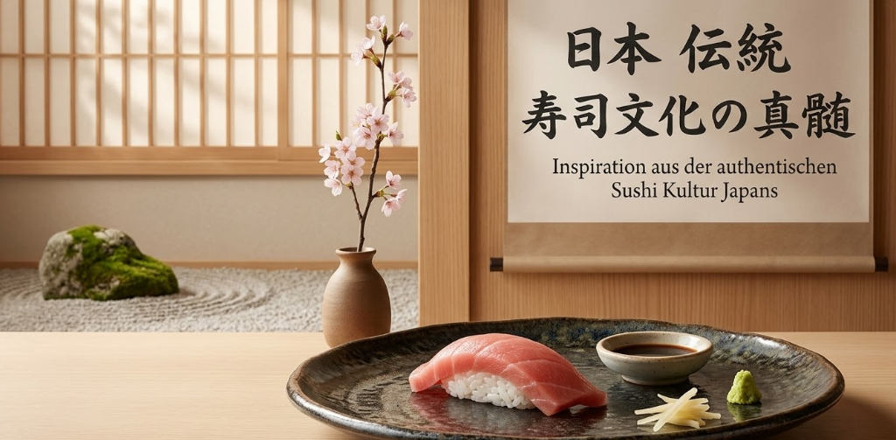
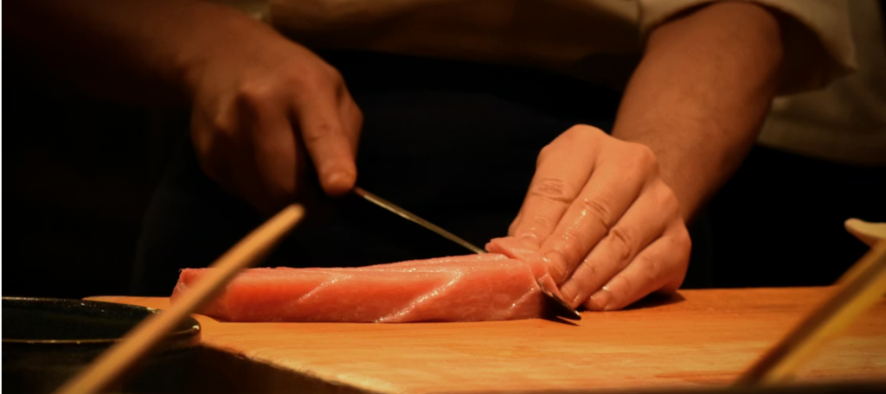
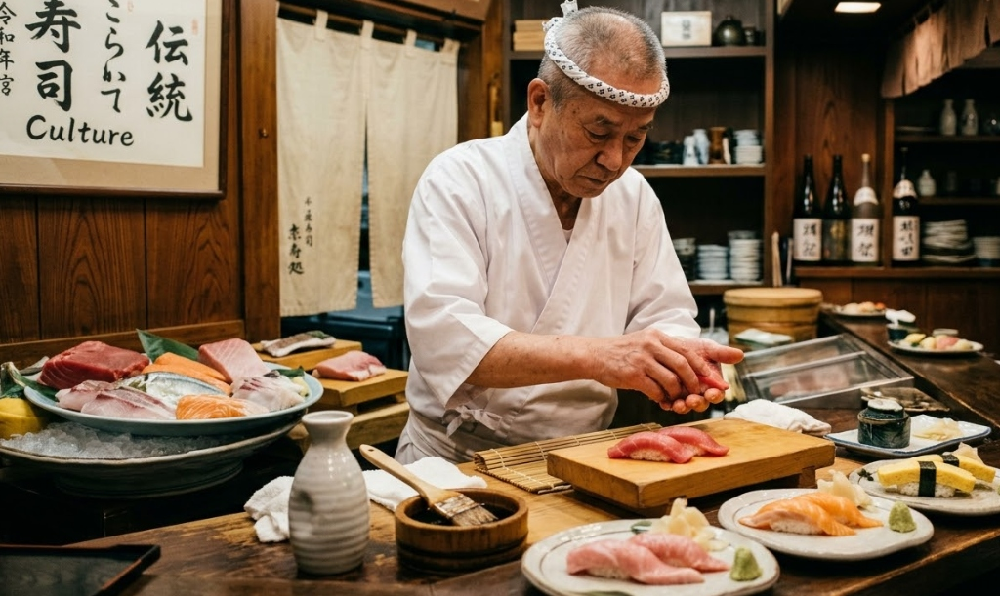

Unsere Geschichte
Traditionelle japanische Sushi-Kunst trifft auf modernes Ambiente. Mit Leidenschaft, frischen Zutaten und handwerklicher Perfektion erschaffen wir einzigartige Sushi-Erlebnisse.
Unsere Leidenschaft für Sushi
Sakura wurde aus der Liebe zur japanischen Küche gegründet. Unsere Sushi-Meister verbinden traditionelle Techniken mit modernen Ideen.
Jede Rolle, jedes Nigiri und jede Spezialität wird mit größter Sorgfalt zubereitet. Frische Zutaten und Qualität stehen bei uns an erster Stelle.

Unsere Sushi Reise

Japanische Tradition
Inspiration aus der authentischen Sushi Kultur Japans.

Frische Zutaten
Täglich ausgewählter Fisch und hochwertige Produkte.

Sushi Meister
Erfahrene Sushi Köche mit Leidenschaft für Perfektion.

Perfektes Sushi
Ein einzigartiges Geschmackserlebnis für unsere Gäste.

🍣 Handgemachtes Sushi
Jede Sushi Rolle wird frisch und mit höchster Präzision zubereitet.

🌿 Hochwertige Zutaten
Wir verwenden nur ausgewählte und frische Zutaten.

✨ Modernes Ambiente
Genießen Sie Sushi in einer stilvollen Atmosphäre.